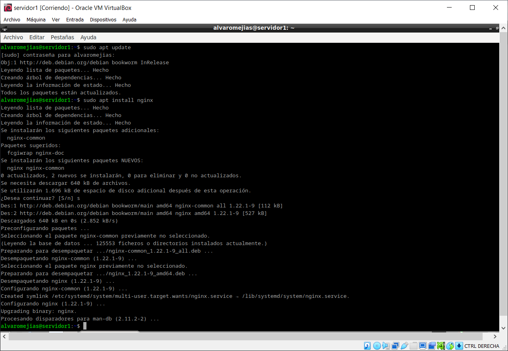
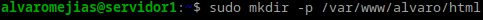
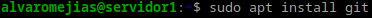
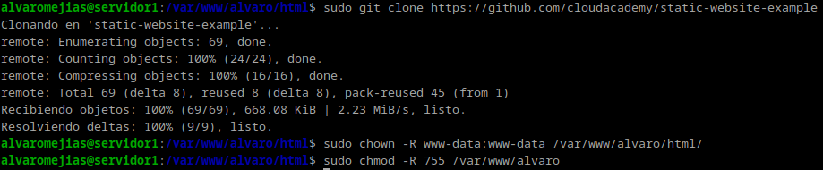
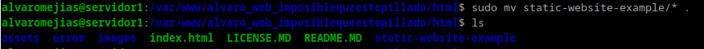
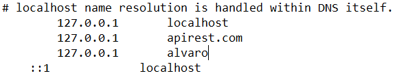
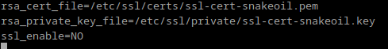
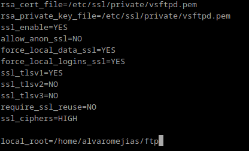
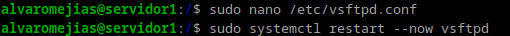
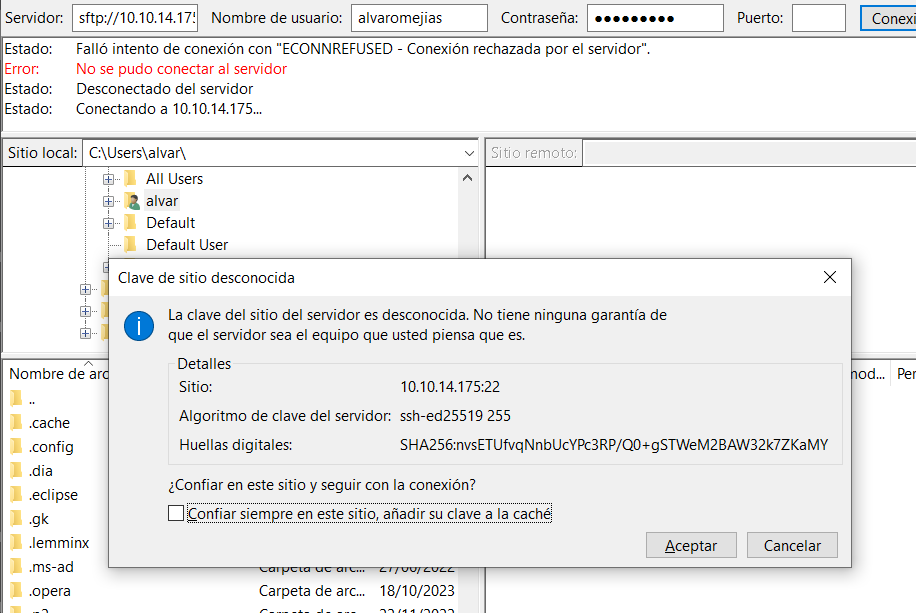

Practica 2¶
Instalación del servidor web Nginx¶
Lo primero es lo primero, hay que actualizar, por lo que usamos sudo apt update y una vez hecho eso, instalamos NGinx mediante sudo apt install nginx

Podemos comprobar que todo está en orden así:

Creación del directorio¶
Una vez hecho esto, nos creamos nuestro directorio:

Nota: Al comprobar que la web funcionaba correctamente con http y https caí en la cuenta de que el dominio www.alvaro.com ya estaba en uso, por lo que puede que en las capturas el nombre del directorio esté cambiado de:
alvaro -> alvaro_web_imposiblequeestepillado
Ahora tenemos que clonar el repositorio que aparece en la guía, asíque necesitamos tener instalado git.

Y ahora sí, clonamos el repositorio y nos damos permiso:



Podemos comprobar que hasta ahora va todo bien si en el navegador introducimos la ip de la máquina y sale lo siguiente:

Configuración del servidor¶
Necesitamos editar el siguiente archivo:

E introducimos esto:


Comprobaciones¶
Ahora en nuestra máquina física debemos modificar el archivo hosts, en mi caso (Windows) en System32\drivers\etc\hosts.

Nota: El puerto indicado no es el correcto, solo lo puse a modo de placeholder, puesto que al estar cambiando de ubicación constantemente (instituto y mi lugar de residencia) no introduje la correcta. El nombre web por otra parte, como se ha indicado anteriormente, tampoco es el definitivo.
FTP¶
Ahora toca la parte de FTP:


Y en el archivo /etc/vsftpd.conf buscamos esto:

Y lo cambiamos por esto:


Ahora tendremos que instalar el cliente de FileZilla en nuestra máquina física para realizar la prueba.

Nota: Me he conectado por el puerto 22

Hacemos click derecho en cualquier archivo que queramos subir (en mi caso, la carpeta despliegue) y nos dejará subirla sin ningún problema.
HTTPS¶
Para el apartado de HTTPS, tenemos que modificar sites-enabled:

Nos damos permisos y reiniciamos:

Y como podemos comprobar, funciona:

Nota: En mi caso, no borro el directorio html porque tengo el root en ese directorio.